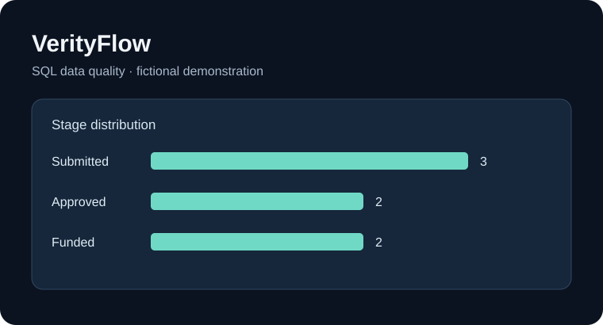
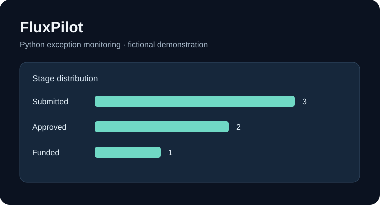
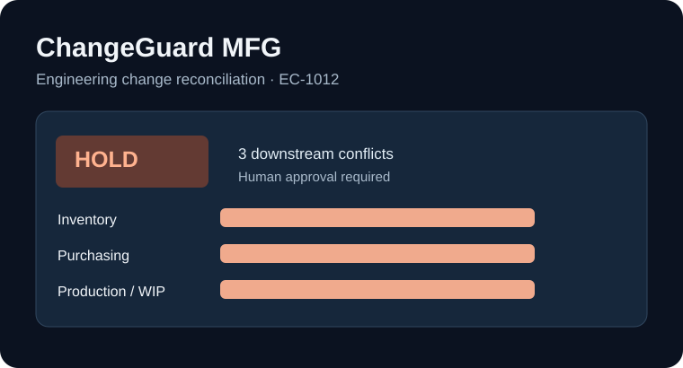

Independent technical demonstrations using fictional data. Each project separates documented findings from production outcomes.
Cybersecurity · Python · Incident Triage
SentinelWatch
Defensive SOC training prototype: authentication detection, MFA and access-review findings, analyst escalation procedures, automated tests, and business risk assessment. Synthetic evidence only.
View security investigation case study →SQL · SQLite · Reporting
VerityFlow

Data-quality and operations intelligence prototype. Reconciles application, agent and workflow records, flags exceptions, and documents reporting definitions and management recommendations.
View dashboard & findings →View source ↗
Python · Validation · Automation
FluxPilot

Configurable operations-feed validation with structured exception outputs, duplicate and missing-field checks, automated tests, and a repeatable synthetic benchmark.
View dashboard & findings →View source ↗
Python · SQLite · Manufacturing
ChangeGuard MFG

Engineering-change reconciliation demonstration focused on tracing record inconsistencies and assessing critical exceptions with a synthetic benchmark.
Explore interactive case study →View source ↗